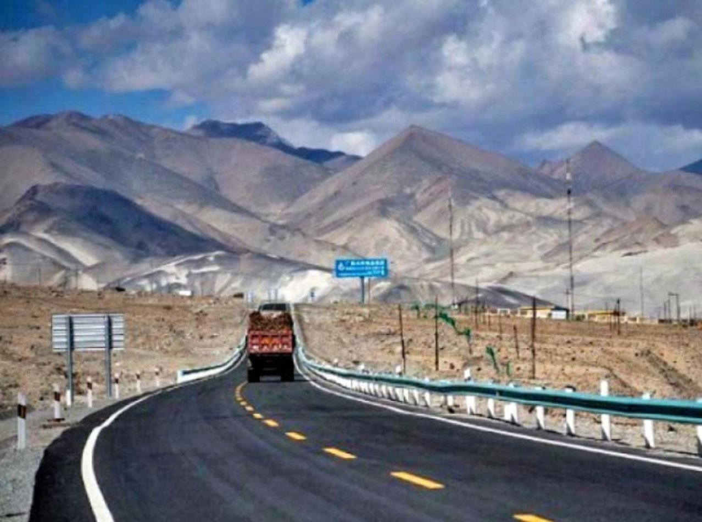
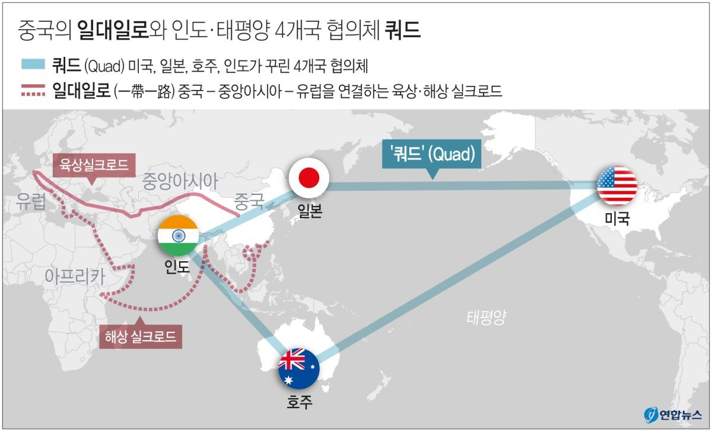

기존 인프라
철도
도로
가스관
송유관
항구
가스전
유전
해상 요충지
BRI 추가
회랑 (색별)
신규 철도
신규 도로
신규 가스관
신규 송유관
진주목걸이 거점
중국이 세계 각국과의 경제적·정치적 연결성을 강화하기 위해 추진하는 국제 개발 전략입니다. 과거의 실크로드가 중앙아시아에서 머물렀다면, 현대의 일대일로는 러시아·유럽·아프리카까지 확장된 글로벌 연결망을 목표로 합니다. 핵심은 고속철도·도로·항만·파이프라인 등 인프라를 구축하여 무역 확대와 함께 석유·천연가스 등 자원의 안정적 운송망을 확보하는 데 있습니다.
"하나의 지대(Belt)"를 뜻합니다. 과거 낙타와 마차로 물품을 운송하던 고대 실크로드를 현대적으로 재해석한 것입니다.
중국은 육로를 따라 도로·철도·송유관·가스관을 연결하여, 중앙아시아에서 에너지 자원을 직접 수입하고, 유럽·중동 시장으로의 진출 통로를 확보합니다.
이 경로는 인도·러시아·미국의 영향력에서 벗어난 독자적 자원 확보 루트라는 점에서 지정학적 의미가 큽니다.
"하나의 길(Road)"을 뜻합니다. 21세기 해상 실크로드는 남중국해를 출발해 동남아시아·남아시아를 지나 인도양·아프리카·유럽까지 연결됩니다.
이 항로를 따라 중국은 항만·물류망·해군기지 등 전략적 거점을 확보하고 있습니다.
이는 단순한 물류 네트워크를 넘어 군사적 영향력 확대라는 목적도 함께 갖고 있습니다.
파키스탄은 오랜 전력 부족과 낙후된 인프라로 경제 성장이 제한되어 있었습니다. 중국과의 협력은 인프라 투자 유치와 동시에 인도·미국과의 외교적 균형을 잡는 수단이 되었습니다. 특히 과다르항 개발은 양국 모두에게 지정학적 요충지 확보의 의미를 가집니다.

쿼드(Quad)는 미국, 일본, 호주, 인도 4개국이 국제 안보를 주제로 가지는 정기적 정상 회담이자 비공식 전략 협의체입니다. "자유롭고 열린 인도-태평양(Free and Open Indo-Pacific)"이 표면적 목표이나, 사실상 중국의 일대일로 전략에 대응하는 성격이 짙습니다.

4개국은 정기적으로 합동 군사 훈련을 실시하며, 경제적으로도 중국 의존도를 줄이고자 합니다. 인도는 정식 동맹국은 아니지만 일부 안보 사안에서 협력하며, 중국의 일대일로(특히 진주목걸이 전략과 CPEC)에 대한 견제 의식이 강합니다.
한국은 지정학적으로 중국과 미국 사이에 놓인 전략적 요충지입니다. 일대일로에 참여하면 북한을 거쳐 대륙과 연결되어 중앙아시아·유럽과의 교통·물류 연결성이 확대됩니다. 반면 미국이 주도하는 쿼드는 인도-태평양 안보 협력으로 중국의 영향력 확대를 견제합니다.